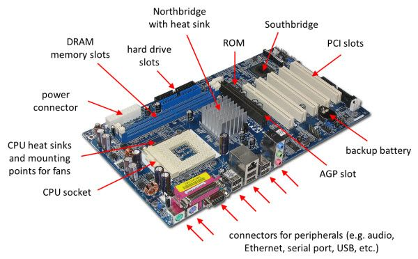

Computers have many parts. We can see some of them. Some of them are inside the computer, so we can't see them unless we open the computer. Some parts are so small that we might not be able to see them at all. Going over the parts of a computer and their functions will help you understand all the vital components that make up a computer. Here is a complete list of all the common computer hardware components and common peripherals with their functions
1. The computer case

This part holds all of the internal components to make up the computer itself. It is usually designed in such a manner to fit a motherboard, wiring, and drives as easy as possible. Some are designed so well that it is easy to make everything look tidy and presentable too. Cases come in all different shapes and sizes to accommodate various types of computer components and to satisfy the consumer's need. Design elements can vary from being plain to extremely elaborate. You can get a plain grey case or one that has colored lighting everywhere to make it look amazing. Cases, like most things, vary in quality. You can get them made from cheap metals or from good quality materials that provide you with a firm design.
Computer case sizes (form factor)
- Larger form factors: Supports ATX and XL-ATX motherboards.
- Standard form factor: Supports standard ATX motherboards.
- Small form factor: Supports micro ATX motherboards.
- Very small form factor: Supports Mini ITX motherboards
2. Motherboard

The motherboard is the main board that is screwed directly inside the computer case. All other cards and everything plugs directly into the motherboard, hence its name.The CPU, RAM, drives, power supply and others are connected to it. Its function is to integrate all the components with each other so they can communicate and operate together. A good motherboard offers a wide amount of connectivity options. It also has the least amount of bottlenecks as possible. This allows all the components to operate efficiently and to fulfill their maximum potential as they were designed to do. Obviously, as the physical size of a motherboard is reduced, it begins to limit connectivity options and functionality.
Most motherboards also allow you to scale up by including slots that allow for expansion. You could add in components like CPUs and RAMs, Video cards, and so on. You can also expand the motherboard by adding more ports that allow you to connect even more auxiliary devices to your computer. In other words, you have control over just what your computer’s capabilities are.
3. CPU (Central Processing Unit)

The CPU is basically like the brain of a computer. It processes all the information on a computational level. It takes information from the RAM and processes it to perform the tasks required from the computer. It is usually seated in a socket that utilizes a lever or a latch with a hinged plate with a cut out in the center to secure it onto the motherboard. It has many copper pads underneath it for the contacts of the socket to push up against them to make electrical contact.
The CPU mainly does arithmetic and logical tasks. It will make a bunch of calculations to ensure the functions of the computer are carried out efficiently. The CPU doesn’t always function at a single speed. The speed can vary depending on the priority and intensity of the task at hand. The CPU will generate a lot of heat as it does its work and so the fan that is built into the power supply comes in real handy at this point.
4. RAM (Random Access Memory)

It is a data storage device that can provide fast read and write access. The RAM keeps data ready for the CPU to process. The speed of the RAM is a big contributor to the overall speed of a computer. It plugs directly into a long slot which has contacts on either side of the slot. It has a clock speed, just like a processor. So, it can also be overclocked to deliver increased performance beyond the intended specification.
Since RAM is only temporary, it has a volatile nature. The minute you turn your computer off, all of the memory that is stored in RAM is lost. That’s why you’re advised to keep saving the work you do in applications as you go along to avoid losing all of it in case your computer suddenly goes off. RAM has evolved like any other component. RAM used on the motherboard often makes use of DDR (Double Data Rate) SDRAM (Synchronous Dynamic Random Access Memory) type memory.s
5. Hard drive or Solid State drive

Since RAM is volatile due to its temporary nature, it means the computer still needs a more permanent form of data storage. That is why the hard drive or solid state drive exists. A hard drive is found in most computers. A hard drive is a mechanical drive that stores all the data. It lets the programs run and saves everything we want to keep in our computer, including all the songs, photos, and information we have typed. It is located inside the body of the computer. Apart from storing data, it can also be used as a boot drive in order to run the operating system from it.
6. Graphics Card

A graphics card processes the data from the motherboard and sends the appropriate information to the monitor in order for it to be displayed. It can do so using an HDMI, DisplayPort, DVI, or VGA connector. A graphics card can also be referred to as a video card or a display card. It takes the burden of all the video processing from the main CPU. This gives a computer a big boost in performance. A graphics card plugs into a PCI Express (Peripheral Component Interconnect Express) slot on the motherboard. A graphics card has a GPU (Graphics Processing Unit) which is the main component that requires cooling. A GPU is slower than a CPU, but it is designed to deal with mathematical operations required for video rendering.
Sometimes, the computer may have integrated graphics, where some of the RAM is borrowed for graphics processing. This happens frequently on laptops, because there is a need to save space. Using integrated graphics is much less expensive using a graphics card, but is not sufficient for intense graphics functions.
7. Solid State Drive (SSD)

An SSD is also a type of hard drive, but it doesn’t have any moving parts. It consists of a bank of flash memory that can hold a reasonable amount of data. While SSD’s are increasing in size all the time, they aren’t cost-effective for storing large amounts of data.
8. Power Supply Unit

A power supply mounts inside the computer case. This converts the AC mains supply from the wall socket and supplies the correct DC voltages to all the components inside the computer. The fan on the power source plays a very important role. It cools it down as it does its duty to prevent the computer’s internals from overheating. It’s important to keep that fan clean so that the computer’s power supply functions like it’s meant to. A computer power supply supplies the following voltages:
- +3.3v: This voltage is supplied to the motherboard.
- +5V: This voltage is supplied to the motherboard and other internal components.
- +12V: This voltage is supplied to the motherboard and other internal components.
- -12V: This voltage is supplied to the motherboard.
9. Monitor

A monitor is what you use to see a visual representation of the graphics data sent from the graphics card of the computer. The front portion of the monitor is called the screen, or display. Though the language of a computer is binary code (a series of 1's and 0's), the computer transforms this code on the monitor into a language or pictures that we can understand.
There are various types of monitors on the market. The most commonly used is a LED-backlit LCD monitor. There are also a variety of different sizes with different aspect ratios. The aspect ratio is simply the ratio between height and width. Monitors also have a fast response time in order to keep up with the high demands required to eliminate delays with user input for gaming.
10. Keyboard

A keyboard is one of the ways to communicate with a computer. By typing a key from the keyboard, it sends a small portion of data to tell the computer which key was pressed. It is made of several small buttons called keys. Each key has a number, letter or word written on it. Just as you use a pencil to write on a paper, you can use a keyboard to write with a computer. Types of keyboards include; QWERTY Keyboards, AZERTY Keyboards, and DVORAK Keyboards.
11. Mouse

The computer mouse is a hand-held pointing device used to manipulate objects on a computer screen. The three main buttons on a mouse, allows the user to select, grab, scroll and access extra menus and options. A computer mouse can be wired or wireless. Types of Mouse include; Cordless (Wireless), Footmouse, IntelliMouse (Wheel mouse), J-Mouse, Joystick, Mechanical, Optical, Touchpad (Glidepoint), Trackball, and TrackPoint.
12. Printer

A printer is an external hardware output device that takes the electronic data stored on a computer or other device and generates a hard copy. A printer can take an image sent by a computer and deliver it onto a sheet of paper. The two most common types of printers are inkjet and laser printers. Inkjet printers are commonly used by consumers, while laser printers are a typical choice for businesses. Printers also have other functions besides printing, this includes copying, faxing and scanning making it a useful piece of hardware.
13. Scanner

A scanner can take anything on a piece of paper and scan it to produce a replicated digital image. This is also very handy for saving physical photos that you want to preserve. Once the photo is stored digitally, it won’t decay as a physical photo does over time.
14. Speakers

A computer speaker is an output hardware device that connects to a computer to generate sound. The signal used to produce the sound from the computer speaker is created by the computer's sound card. It is used for listening to music, movies, and other audio. Speakers are transducers that convert electromagnetic waves into sound waves. The speakers receive audio input from a device such as a computer or an audio receiver.
15. Optical Drive

These have become a lot less common today, with many machines doing away with them altogether. An optical drive is used to read CDs and DVDs, which can be used to listen to music or watch movies. They can also be used to install software, play games, or write new information into a disk.